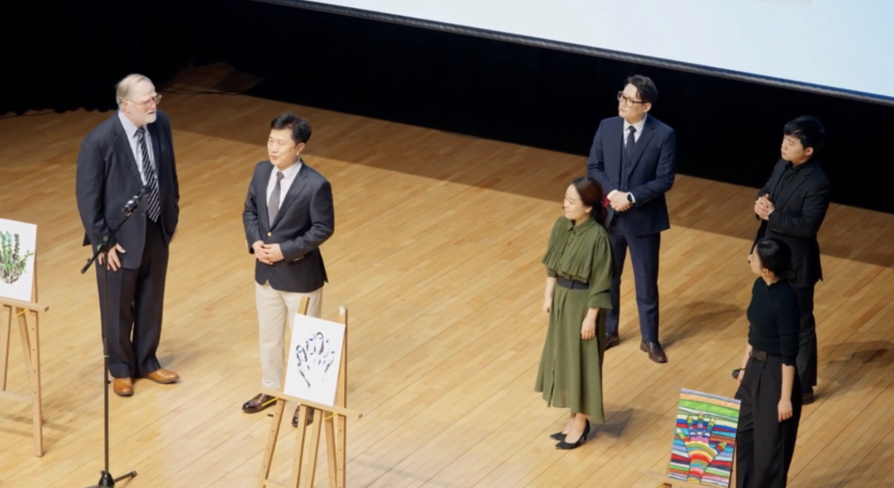

Musicals for Awareness
Parcanto’s musicals bring real stories to the stage — performed by and for those impacted by Parkinson’s.
These events raise awareness, inspire community, and help others understand the human side of the disease.
Musical Performances
Parcanto’s musicals are a powerful way to raise awareness and foster community. By sharing real stories through performance, we aim to inspire understanding and empathy for those living with Parkinson’s.
These events not only entertain but also educate audiences about the challenges faced by individuals with Parkinson’s, creating a platform for dialogue and support.
Through the arts, we can break down barriers, dispel myths, and build a more inclusive society for everyone affected by this condition.
Impact of Musicals
Musicals have the power to connect people, evoke emotions, and create lasting impressions. By sharing personal stories through music and performance, we can:
Join us in our mission to use the arts as a force for good, bringing people together to make a difference.